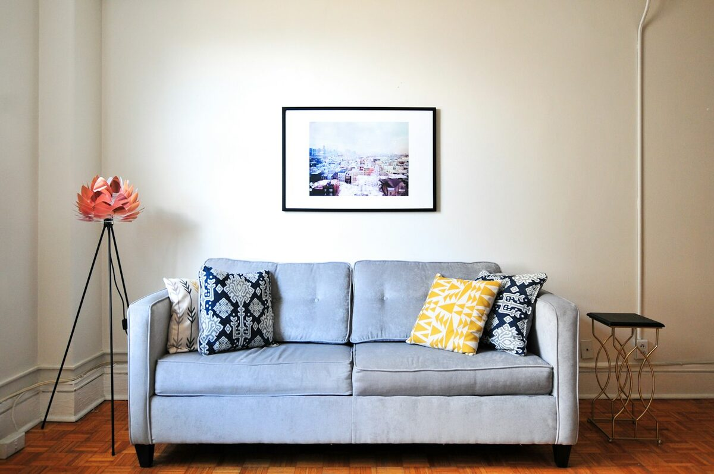

Sala de estar
Sala de estar
A sala é o cartão de visita da casa e, quase sempre, o ambiente mais disputado. O erro mais comum é escolher móveis grandes demais para o espaço disponível.
- Deixe de 70 a 90 cm livres para circulação entre o sofá e a mesa de centro.
- O tapete deve passar por baixo das pernas frontais do sofá — tapete pequeno encolhe o ambiente.
- Quadros ficam bem alinhados quando o centro da composição está a cerca de 1,50 m do chão.
- Espelhos na parede oposta à janela multiplicam a luz natural.